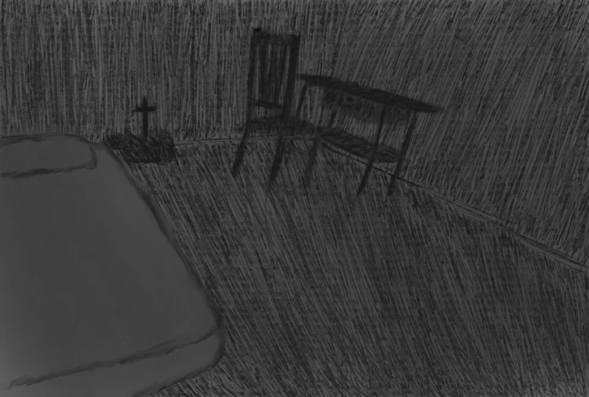
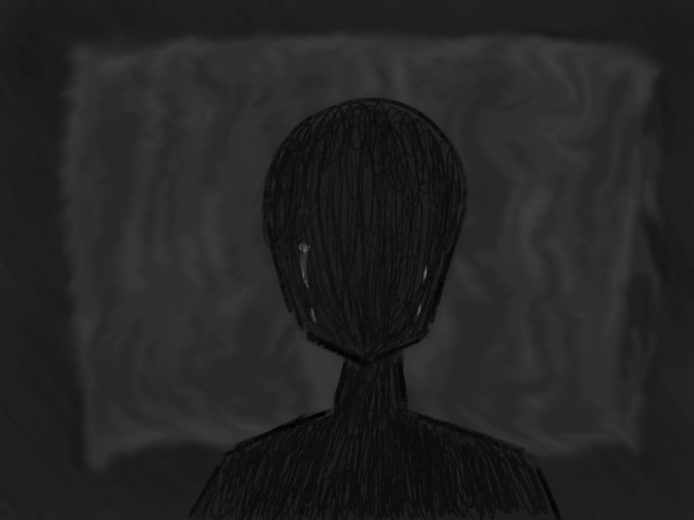

J’étais debout au milieu de ma chambre, seul. Il faisait nuit et à nouveau s’installait cette sensation étouffante. Lourde et froide. Elle envahissait la pièce et s’infiltrait partout, que ce soit dans l’air ambiant ou mon corps, jusque dans mes propres pensées.
Suffocation

Je n’arrive pas à décrire précisément le trouble qui m’affecte. Mes pensées sont tellement désordonnées. Je ne comprends rien. Je ne distingue rien, mais je sens que quelque chose me ronge de l’intérieur.
Je dirais que la maladie a pris naissance dans mon estomac, à moins que ce ne soit dans mon cœur. Quoiqu’il en soit, elle s’est ensuite propagé jusque mes poumons et mes muscles, avant d’atteindre et d’affaiblir mon organisme tout entier.

Je me retrouvai allongé sur mon lit, les bras étendus de chaque côté de mon corps. Des
larmes que j’avais pu retenir jusqu’ici ruisselaient en se refroidissant sur mes joues. Le
mal avait encore gagné en intensité sans que je sache pourquoi.
La simple pensée de mon visage laid déformé par une douleur injustifiée m’inspire le dégoût, pourtant, plus
je m’efforce de la chasser, plus elle se renforce. Mon propre corps est devenu mon
ennemi.